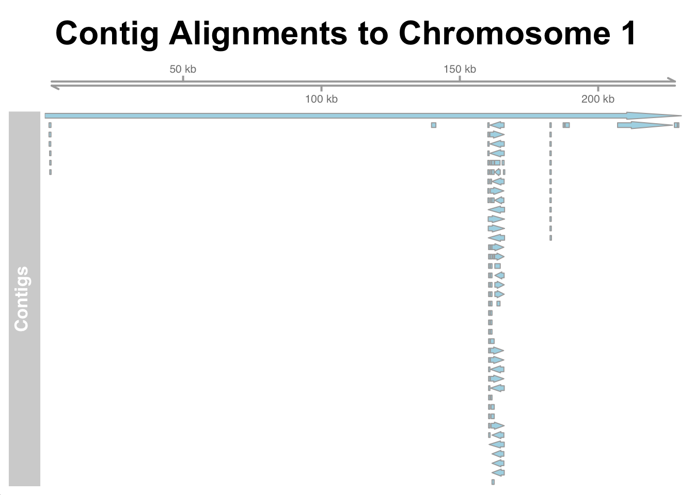

docker pull quay.io/biocontainers/quast:5.3.0--py313pl5321h5ca1c30_23 Lab 3: Genome Assembly and Annotation Basics
4 Learning objectives
Click to expand
By the end of this lab you will be able to:
- Understand the basic process and challenges of genome assembly.
- Understand the importance of polishing and scaffolding.
- Use Flye to perform long-read de novo genome assembly and Medaka to polish it.
- Evaluate assemblies using QUAST and BUSCO.
- Interpret common assembly quality metrics.
- Use GRanges for basic annotation-like tasks by mapping known genes to assembled contigs.
5 The setup
Create a new GitHub repo for this lab.
In RStudio:
- Create a new R Project with version control and connect it to your
GitHubrepo. - Ensure your project contains a
data/directory for raw inputs and anoutputs/directory for generated results. - Start a new Quarto document named
03-lab3.qmd. - Make sure to add the
data/andoutputs/folders to your.gitignorefile.
Commit these files immediately with a message like Initial commit.
On your terminal, pull the Docker image for quast, which along with BUSCO will be used to evaluate the quality of the genome assembly you will do today.
Next, use conda to install the sequence aligner minimap2 if not installed on your computer. You can check if it is installed by running minimap2 -h in your bash terminal. minimap2 does not require a virtual environment.
Also, load the following packages in your R session:
library("IRanges")
library("GenomicRanges")
library("Rsamtools")
library("GenomicAlignments")
library("Gviz")Lastly, download the yeast reference genome, along with its GFF file (a file that contains the list of gene annotations) to be used for the assembly check, as well as the CDS containing FASTA file. This should be done in the terminal.
# Download the reference genome from refseq
wget -nc -P data/ https://ftp.ncbi.nlm.nih.gov/genomes/refseq/fungi/Saccharomyces_cerevisiae/latest_assembly_versions/GCF_000146045.2_R64/GCF_000146045.2_R64_genomic.fna.gz
# Download the genome annotation file from refseq
wget -nc -P data/ https://ftp.ncbi.nlm.nih.gov/genomes/refseq/fungi/Saccharomyces_cerevisiae/latest_assembly_versions/GCF_000146045.2_R64/GCF_000146045.2_R64_genomic.gff.gz
# Download the cds containing fasta file from refseq
wget -nc -P data/ https://ftp.ncbi.nlm.nih.gov/genomes/refseq/fungi/Saccharomyces_cerevisiae/latest_assembly_versions/GCF_000146045.2_R64/GCF_000146045.2_R64_cds_from_genomic.fna.gz5.1 Reference download and preparation (programmatic renaming)
The NCBI RefSeq reference genome uses IDs like NC_001133.9, but genome browsers (and Gviz) prefer UCSC conventions like chrI or chr1. To ensure our entire workflow is reproducible and that our Gviz visualization plots perfectly, we must “fix” our reference headers before we proceed.
Here we will use an R chunk to programmatically rename the chromosomes to match UCSC standards. Notice that we use an if-else statement to verify the chromosome count before renaming!
# 1. Uncompress and Read the raw NCBI file as simple text
con <- gzfile("data/GCF_000146045.2_R64_genomic.fna.gz", "rt")
ygen <- readLines(con)
close(con)
# 2. Define the new UCSC-style headers (chrI through chrXVI + chrM)
new_headers <- c(paste0(">chr", as.roman(1:16)), ">chrM")
# 3. Find and Replace
header_lines <- grep(">", ygen)
# Look at the header for chromosome 1 before replacing
print(ygen[header_lines[1]])
# Safety Check: Yeast has 16 nuclear chromosomes + 1 mitochondrial
if(length(header_lines) == 17) {
ygen[header_lines] <- new_headers
print("After replacement:")
print(ygen[header_lines[1]])
writeLines(ygen, "data/S288C_UCSC.fna")
message("SUCCESS: Reference renamed to UCSC standards.")
} else {
stop("Error: Chromosome count mismatch! Check your input file.")
}
Note
One final note before you begin: the assignment questions for this lab are interspersed throughout the lab. There are 8 questions, make sure to answer all of them.
6 Assembly overview
A genome assembly is the process of piecing together the full DNA sequence from sequencing reads. Long reads (like those from Oxford Nanopore) simplify this task because they provide more contiguous information. However, they also tend to have higher error rates compared to short reads.
In this lab, you’ll assemble a small dataset of Oxford Nanopore reads from a Saccharomyces cerevisiae isolate — the same strain you worked with in the previous lab. The dataset has low coverage, which will affect the quality of your assembly.
Important concepts:
Coverage - How many times, on average, each position in the genome is represented by a read. For example, 30× coverage means each base is represented, on average, by 30 different reads. High coverage improves the ability to generate a consensus sequence that corrects for sequencing or PCR errors.
Contiguity (e.g., number of contigs, N50) - A measure of how fragmented the assembly is. One common metric is N50, which indicates that 50% of the assembled genome is contained in contigs that are at least that length. As a rule of thumb, a high N50 and a small number of contigs indicate a more contiguous (i.e., less fragmented) assembly.
Completeness - A measure of how much of the expected genome content is present in the assembly. This is often assessed both by comparing the assembly size to expected size based on a reference genome, and whether key conserved genes (e.g., using
BUSCO) are detected. For example, a complete assembly of S. cerevisiae should contain nearly all expected genes for that species and be roughly 12Mb long.
7 Assemble the genome
You will assemble the genome using Flye, a de novo assembler designed specifically for long noisy reads, such as those generated by Oxford Nanopore or PacBio sequencing platforms. It uses a repeat graph approach to assemble genomes, which allows it to handle complex repeat structures more effectively than traditional assemblers. Flye performs well on both low- and high-coverage datasets and is widely used in microbial, eukaryotic, and metagenomic projects.
Note
A de novo assembler is a tool that assembles sequencing reads into a genome without using a reference genome. It builds the sequence entirely from scratch, based only on overlaps and patterns in the reads themselves.
# Ensure the output directory exists
mkdir -p outputs/flye_output
# Run the Flye assembler, note the expected genome size
flye --nano-raw data/ERR1539006.fastq.gz --out-dir outputs/flye_output --threads 8 --genome-size 12m- The
--nano-rawflag denotes we are using raw nanopore reads with old sequencing chemistry. - The
--threadsflag denotes number of CPU cores to use, here 8. - The
--genome-sizeflag is where the expected genome size is specified. Here 12Mb which is the expected size of the S. cerevisiae genome.
Once done, your assembled genome will be in outputs/flye_output/assembly.fasta, and a summary of the assembly process and stats will be in outputs/flye_output/flye.log but also outputted to terminal.
7.1 Assignment question 1
In your document, have an R code chunk that tabulates the alignment statistics, make sure that the table shows the total length of the assembly, the N50, the number of contigs, largest contig and coverage. Based on that, would you expect to have a complete genome? Would you say that the coverage is adequate (3 marks)?
8 Cleaning up the mess: the concept of polishing
De novo assembly, especially with noisy long reads, is a messy business. Even if the assembler successfully finds the correct order of the reads to build a contig, the individual letters (A, C, T, G) within that sequence might still be wrong due to sequencing errors. To fix this, we use polishing.
Think of polishing like running a spell-checker over a manuscript you just finished writing. The paragraphs are in the correct order, but there are typos everywhere. Polishing algorithms take the original reads, map them back to your newly built “draft” assembly, and look at the vertical stack of bases at every single position. If the majority of your reads disagree with the draft assembly at a certain spot, the polisher “outvotes” the draft and corrects the sequence.
Flye has its own built-in polishing algorithm that runs by default at the end of the assembly process. For expediency in this lab, we’ll use just the default single round of Flye polishing. However, to truly get a high-quality consensus sequence, we need to bring in specialized tools.
To take our assembly to the “Gold Standard,” we will use Medaka. Medaka is a polisher developed directly by Oxford Nanopore. Unlike simple majority-voting algorithms, Medaka utilizes a Neural Network (AI) trained heavily on the physical properties of the nanopore itself. It recognizes and fixes the systematic error patterns inherent to the technology.
Warning
A note on our dataset: Because we are working with a very old and noisy ONT dataset for this exercise, you will likely observe massive error rates reported during the Flye polishing round. I want to be entirely transparent with you: this is expected and is a direct consequence of the dataset’s quality and age, not a flaw in your workflow.
For your own course project, working with modern chemistry, you should expect to run 5 rounds of Flye internal polishing followed by 2 rounds of Medaka. Additionally, for your own project data, you must carefully consult the Medaka documentation to select the appropriate model flag (-m), as this depends heavily on the specific ONT chemistry used for sequencing.
8.1 Installing and running Medaka
Let’s set up Medaka using conda. This creates an environment containing all the necessary dependencies.
conda create -n medaka_final -c conda-forge -c bioconda -c nanoporetech medaka python=3.10 -y
conda activate medaka_final
Tip
Troubleshooting (The “Mac Lab” Fix) If you encounter errors creating the environment or running Medaka on our ARM64 lab computers, run the following to force osx-64 architecture for compatibility instead:
CONDA_SUBDIR=osx-64 conda create -n medaka_final -c conda-forge -c bioconda -c nanoporetech medaka python=3.10 -y
conda activate medaka_final
conda install -c conda-forge cffi -yOnce installed, we will use it to polish our draft assembly. We will perform two rounds of polishing for this exercise. Be sure to create your output directories!
# Activate your environment
conda activate medaka_final
# Ensure directories exist
mkdir -p outputs/medaka_round1 outputs/medaka_round2
# Round 1
medaka_consensus -i data/ERR1539006.fastq.gz -d outputs/flye_output/assembly.fasta -o outputs/medaka_round1 -t 8
# Round 2
medaka_consensus -i data/ERR1539006.fastq.gz -d outputs/medaka_round1/consensus.fasta -o outputs/medaka_round2 -t 8Your polished assembly will be located at outputs/medaka_round2/consensus.fasta. We will use this polished sequence going forward.
9 The final structure: scaffolding
You’ve likely noticed that our assembly isn’t just one continuous piece of DNA per chromosome. It’s broken into multiple fragments called contigs. To turn these isolated islands of sequence into a finished, chromosome-level genome, we need a process called scaffolding.
Scaffolding is the process of figuring out the relative orientation and order of these contigs and connecting them together. Because we don’t know the exact sequence of the DNA bridging the contigs, the assembler fills these gaps with strings of the letter N.
Due to the quality, age, and coverage of our example dataset, we will not be performing scaffolding in this lab exercise. The fragmentation is simply too high for it to be pedagogically useful here.
However, do not ignore scaffolding! For your own course project, pending the quality and coverage of your initial assembly, I strongly redirect you to consider scaffolding tools (like RagTag) to elevate your assembly from a collection of contigs to a cohesive genome.
10 Evaluate the assembly
You will evaluate the polished assembly using two tools: quast and BUSCO. quast is used to check and compare genome assemblies. It provides rudimentary metrics for contiguity such as N50 and the number of contigs, along with metrics that evaluate the accuracy of the assembly such as misassemblies.
BUSCO is used to evaluate the completeness of an assembly. It identifies the presence or absence of highly conserved, single-copy genes (orthologs) in the assembly, compared to a reference set for a specific lineage (in your case saccharomycetaceae). A high BUSCO score indicates a more complete representation of the expected gene content for a given organism.
The score is made of several components: - C - Level of completeness made up of: S (found in single copy as expected) and D (duplicated - appeared more than once. Could indicate assembly redundancy or real duplication.) - F - Fragmented. Partial matches. May reflect incomplete assembly or gene breakage/partial deletions. - M - Missing. Not found. Could be due to deletion, divergence, or poor assembly.
10.1 Evaluating the assembly using BUSCO
Remember that BUSCO will be run using Docker, so make sure that Docker Desktop is active on your Mac. First, make sure you create the directory where the output will go.
mkdir -p outputs/busco_output
mkdir -p outputs/busco_output
docker run --rm \
-v "$PWD":/data \
-w /data \
ezlabgva/busco:v6.0.0_cv1 \
busco -i outputs/medaka_round2/consensus.fasta -o outputs/busco_output -l saccharomycetaceae_odb12 -m genome -c 8-v "$PWD":/datamounts the current working directory into the container as/data.-w /dataensures the container operates inside the mounted folder.-crepresents the number of cores, in this case you will use 8.
Note
-l is for lineage. Since we know the sample is a yeast (Saccharomyces), you will use the saccharomycetaceae_odb12 as reference. BUSCO also has the ability to try and identify the lineage of the submitted assembly using the --auto-lineage-euk flag. While useful, specifying the lineage is more reliable and saves runtime.
10.1.1 Assignment question 2
The BUSCO reports should be found under outputs/busco_output. Open the text file with lineage specific results, and answer the following:
- What were the
BUSCOscores? Given the coverage do you think they are good (2 marks)? - What was the N50 compared to the
flyecalculated one (1 mark)? - What was the total assembly length (1 mark)?
10.2 Evaluating the assembly with quast
quast will also be run using Docker. Before running QUAST, make sure you have unzipped your reference genomes and you supply the properly formatted UCSC standard S288C_UCSC.fna file!
gunzip -k data/GCF_000146045.2_R64_genomic.gff.gzmkdir -p outputs/quast_output
mkdir -p outputs/quast_output
docker run --rm -v "$(pwd)":/data -w /data quay.io/biocontainers/quast:5.3.0--py313pl5321h5ca1c30_2 \
quast.py outputs/medaka_round2/consensus.fasta \
-r data/S288C_UCSC.fna \
-g data/GCF_000146045.2_R64_genomic.gff \
-o outputs/quast_output- The
-rargument specifies the reference genome to which the assembly is compared. In this case, you will use the properly-formatted RefSeq reference genome for S. cerevisiae. A RefSeq genome is a curated, non-redundant, and annotated reference genome sequence maintained by NCBI. - The
-gargument specifies gene annotations by providing the GFF file for the reference genome. GFF stands for General Feature Format. It is a tab-delimited text file that describes genomic features. - The
-oargument specifies the output directory wherequastwill write its reports.
10.2.1 Assignment question 3
Open the quast report:
- What was the genome fraction how does it compare to
BUSCO(2 marks)? - What was the duplication ratio (1 mark)?
- What was the level of misassemblies and what is the length of the misassembled contigs? What does it tell you about how well the reference genome represents the genomic diversity of the species S. cerevisiae (3 marks)?
11 Annotating assemblies using alignment and visualization tools
Next, you will align the contigs resulting from the genome assembly to the reference genome, and then align CDSs from the reference genome back to the contigs.
Aligning assembled contigs to a reference genome allows us to evaluate the structure and quality of the assembly. This step helps answer key questions like: * Which parts of the genome were recovered? * Are the contigs in the correct order and orientation? * Do the contigs cover important genomic features, like genes or regulatory regions?
By mapping contigs to a known reference, we can also detect structural differences, identify potential misassemblies, and gain biological insights.
11.1 Why align the CDSs to the contig?
Aligning the coding DNA sequences (CDSs) from a trusted reference genome to your assembled contigs allows you to annotate potential genes in your assembly. This helps identify what functional elements are present and where they are located. Even if your assembly is incomplete or fragmented, mapping known CDSs can reveal which parts of the genome were successfully recovered.
11.2 Assignment question 4: data prep
For the next part you will work only with the sequence of chromosome 1, to reduce CPU time.
- Write a code chunk that extracts the sequence of chromosome 1 (which we renamed to
chrI) from yourdata/S288C_UCSC.fnafile and saves it asoutputs/R64_chr1.fna(2 marks). - Make sure the chunk is on your Quarto file, and that you run it (1 mark).
- Make sure the
R64_chr1.fnais in your.gitignoreas well (1 mark).
11.3 Aligning your assembly to chromosome 1
Next you will use minimap2 to align the contigs to chromosome 1 extracted from the reference genome. The -ax asm5 argument is used when aligning closely related sequences, such as contigs to a reference genome, and requires a minimum of 95% sequence identity.
minimap2 -t 8 -ax asm5 outputs/R64_chr1.fna outputs/medaka_round2/consensus.fasta > outputs/contig_vs_chr1.sam
Note
The output here is a sam (sequence alignment map) file, which is a tab delimited text file that specifies the coordinates of each aligned sequence relative to the reference.
11.3.1 Using samtools to sort the alignment by region and converting it to a bam file
In order to visualize the alignment, it needs to be sorted by coordinates so that fragments that are close to each other will indeed appear like that in the plot. The human-readable sam file will also be converted to a binary alignment map (bam) file.
- Convert the
samfile to abamfile.
samtools view -bS outputs/contig_vs_chr1.sam > outputs/alignment.bam- Sort the aligned contigs based on their coordinates along chromosome 1.
samtools sort outputs/alignment.bam -o outputs/alignment.sorted.bam- Index the sorted bam file.
samtools index outputs/alignment.sorted.bam- Creates an index file (
.bai) for the sorted BAM. - Indexing allows fast access to specific regions, which is essential for genome browsers and R packages like
Gviz.
11.3.2 Visualizing the alignment to chromosome 1 with GRanges
Next you will visualize the aligned contigs against the chromosome using GRanges. But before we just plot things blindly, we need to actively discover where our data is mapped to.
To build our browser, we need to know exactly where our data is located. We use Rsamtools to look at the BAM file’s “table of contents” and GenomicAlignments to find the specific range of coordinates where our reads actually map.
- Import the
bamfile and convert it into a GRanges object. A genome browser requires a window (afromand atocoordinate). To find where our data lives, we read the alignments into aGRangesobject and calculate the overall range.
# BAM file path
bam_file <- "outputs/alignment.sorted.bam"
# Open connection to BAM file
bam <- BamFile(bam_file)
# Read all alignments
alns <- readGAlignments(bam)
# Convert to GRanges object
gr_alns <- granges(alns)
# Find the start and end boundaries of all mapped contigs combined
range(gr_alns)GRanges object with 2 ranges and 0 metadata columns:
seqnames ranges strand
<Rle> <IRanges> <Rle>
[1] chrI 1-230218 +
[2] chrI 1566-182959 -
-------
seqinfo: 1 sequence from an unspecified genome# Peek at the individual contig boundaries
ranges(gr_alns)IRanges object with 112 ranges and 0 metadata columns:
start end width
<integer> <integer> <integer>
[1] 1 230218 230218
[2] 1534 2252 719
[3] 1534 2252 719
[4] 1566 2185 620
[5] 1807 2197 391
... ... ... ...
[108] 187377 187763 387
[109] 188064 189566 1503
[110] 207001 226868 19868
[111] 227524 228577 1054
[112] 228674 229142 469Now that we have audited the boundaries of our alignments, we can construct the browser tracks! We can simply pass the minimum and maximum boundaries we discovered above dynamically.
- Create “tracks” showing the alignment. Notice we specify
chrIas the chromosome, consistent with our UCSC renaming step.
aln_track <- AnnotationTrack(gr_alns, name = "Contigs", genome = "sacCer3", chromosome = "chrI")
# Add genome axis for scale
axis_track <- GenomeAxisTrack()- Visualize the alignment.
# Plot
plotTracks(list(axis_track, aln_track),
from = min(start(gr_alns)),
to = max(end(gr_alns)),
main = "Contig Alignments to Chromosome 1")
TipCongrats!
You just built your own genome browser! While not as fancy or interactive as the UCSC genome browser or IVG, this R-based version is still incredibly powerful. It allows for customization, automation, and seamless integration with your analysis pipeline — all within a reproducible script.
11.3.2.1 Assignment question 5
- How many contigs did you have aligning to chromosome 1 (1 mark)?
- Using the functions
range()andranges()try and estimate how much of chromosome 1 does your contigs cover, is it in line with the alignment results reported byQUAST(2 marks)? - Make sure to have the plot in your document (1 mark).
11.3.3 Assignment question 6: garbing the longest contig
Before proceeding with annotation:
- Write a code chunk that extracts the longest contig from your polished
consensus.fastafile and saves it asoutputs/longest_contig.fasta. - The code is included in your assignment file.
- The resulting FASTA file is committed and pushed to your GitHub repository.
Why are we doing this? Working with just the longest contig reduces computational load and simplifies the next steps, where you’ll align known coding sequences (CDSs) to your assembly as a first pass at annotation.
11.3.4 Aligning CDSs to the longest contig
- Use
minimap2to align the CDS containing fasta file to the longest contig. Remember to unzip it first.
gunzip -k data/GCF_000146045.2_R64_cds_from_genomic.fna.gzminimap2 -ax splice -uf --secondary=no outputs/longest_contig.fasta data/GCF_000146045.2_R64_cds_from_genomic.fna > outputs/cds_aln.sam- The
-ax spliceargument uses the splice-aware preset, which is designed for aligning spliced transcripts (like mRNAs or CDSs) to a genome. - The
-ufflag indicates that the query sequences are full-length cDNA (or CDSs), which helps minimap2 model splicing more accurately. - The
--secondary=noargument suppresses secondary alignments.
11.3.5 Assignment question 7: getting bam and bai files for visualization
- Write a code chunk that converts your
cds_aln.samfile to a sorted and indexedBAMfile for visualization (2 marks). - Include the code in your document (1 mark).
- Ensure the final
BAMis namedcds_aln.sorted.bam(1 mark). - Ensure that the Bam and Bai files are in the
.gitignorefile (1 mark). - Commit and push your changes to your GitHub repository (1 mark).
11.3.6 Assignment question 8: visualize CDS
Using your sorted BAM file, create Gviz tracks that represent the aligned CDSs.
- Remember to read the alignment and convert it into GRanges.
- Remember working with annotation tracks.
- Remember to plot the alignment track.
- Remember to include your code and the plot in the document.
- Commit and push changes to
GitHub.
ImportantContig naming scheme
Note that Gviz expect the naming scheme of your reference data, i.e. whatever you align against, to be named according to the UCSC genome browser convention. Since your contigs will not be, make sure to set options(ucscChromosomeNames=FALSE) before you use the function AlignmentTrack() with the bam file you created for this part. Note as well that this is a global setting so it is worth while to make sure that you set it back to TRUE if you wish to re-plot the alignment against chromosome 1.
12 You’re all done
Hope you had fun assembling and annotating genomes. This lab will become very useful once you start working on your project. Next lab will deal with transcriptomics data.